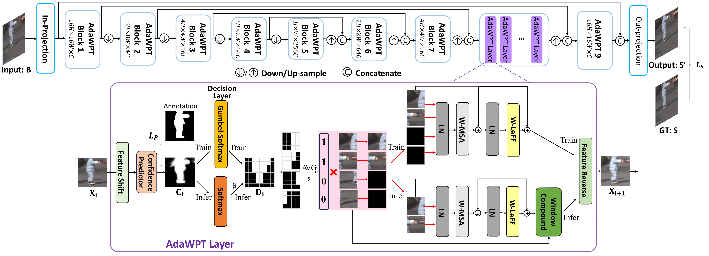

We introduce LMD-ViT, a Transformer-based local motion deblurring method with an
adaptive window pruning mechanism. We prune unnecessary windows based on the predicted
blurriness confidence supervised by our blur region annotation. In this process, the
feature maps are pruned at varying levels of granularity within blocks of different
resolutions. The white masks in AdaWPT 5 to 8 denote tokens to be preserved, and regions
without white masks are pruned. The grids denote window borders. Unlike global deblurring
methods that modify global regions, LMD-ViT performs dense computing only on the active
windows of blurry regions. Consequently, local blurs are efficiently removed without
distorting sharp regions.
Key Approach
Local motion blur commonly occurs in real-world photography due to the mixing
between moving objects and stationary backgrounds during exposure. Existing
image deblurring methods predominantly focus on global deblurring, inadvertently
affecting the sharpness of backgrounds in locally blurred images and wasting
unnecessary computation on sharp pixels, especially for high-resolution images.
This paper aims to adaptively and efficiently restore high-resolution locally
blurred images. We propose a local motion deblurring vision Transformer (LMD-ViT)
built on adaptive window pruning Transformer blocks (AdaWPT). To focus deblurring
on local regions and reduce computation, AdaWPT prunes unnecessary windows,
only allowing the active windows to be involved in the deblurring processes.
The pruning operation relies on the blurriness confidence predicted by a confidence
predictor that is trained end-to-end using a reconstruction loss with Gumbel-Softmax
re-parameterization and a pruning loss guided by annotated blur masks. Our method
removes local motion blur effectively without distorting sharp regions, demonstrated
by its exceptional perceptual and quantitative improvements compared to
state-of-the-art methods. In addition, our approach substantially reduces FLOPs by
66% and achieves more than a twofold increase in inference speed compared to
Transformer-based deblurring methods.

Architecture of LMD-ViT. The proposed local motion deblurring vision Transformer
(LMD-ViT) is a U-shaped network with an encoder stage, a bottleneck stage, and a decoder
stage with skip connections. An in-projection/out-projection layer is placed at the
beginning/end of the network to extract RGB images to feature maps or convert feature maps
to RGB images. The encoder, bottleneck, and decoder include a series of adaptive
window-token pruning Transformer blocks (AdaWPT) and down-sampling/up-sampling layers.
As a key component, AdaWPT removes local blurs by a window pruning strategy with a confidence
predictor, a decision layer, and several Transformer layers. It is trained with a reconstruction
loss and a pruning loss constrained by our carefully annotated blur masks. AdaWPT can be
applied in any encoder/decoder/bottom-neck block and is flexible to prune at different resolutions.
In our proposed LMD-ViT, windows are pruned coarsely in low-resolution blocks and finely in
high-resolution blocks. This strikes a balance between computational complexity and accuracy.